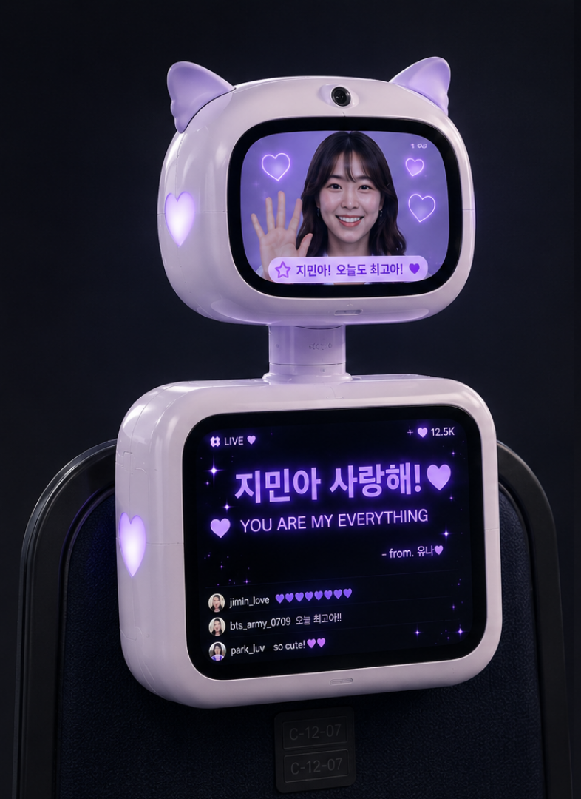

Concert Robot
An interactive concert-photography robot — a seat-bound proxy that lets remote fans be present in the crowd.
Many fans cannot attend concerts due to distance, time, or ticket limitations, and can only watch through livestreams or videos.
However, current remote viewing experiences are mostly one-way — lacking interaction and participation, making it difficult for fans to feel truly present.
To bridge the gap of remote viewing, we designed CATTY — a telepresence robotic proxy that gives remote fans a physical seat at the concert.
The Remote Audience Proxy
Designed as a half-body robot fixed to a concert seat, CATTY acts as a two-way emotional bridge. It immerses the remote fan in the live atmosphere, while allowing them to communicate and interact directly with the on-site audience and performers.


Key Components
Three core parts turn an empty seat into a two-way window between the remote fan and the live crowd.

Viewer Face & Emotion Display
Shows the viewer's face and real-time emotional expressions, and can display remote fans' cheering messages live.
Live Feed & Capture
A live monitor feed for the viewer, plus high-quality moment-capture for keeping the memories.
Gaze & Tracking
The head rotates left and right to simulate audience gaze and camera tracking, while enabling interaction with on-site fans.
We brought CATTY to life by building a 1:1 conceptual prototype, enabling us to test key interactions and validate its physical form and scale.
See how CATTY bridges the physical gap, transforming remote fans from passive viewers into active participants within the live crowd.
Beyond Passive Viewing
Instead of just watching a livestream alone at home, remote fans can use the robot's lights as a virtual lightstick, display supportive messages on the screen, and physically "look around" to interact with the on-site fans sitting next to them. This transforms passive watching into a shared, two-way emotional experience.


Ready to see it all come together?
Watch Functional Demo